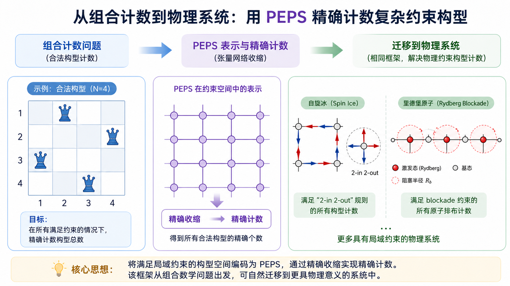
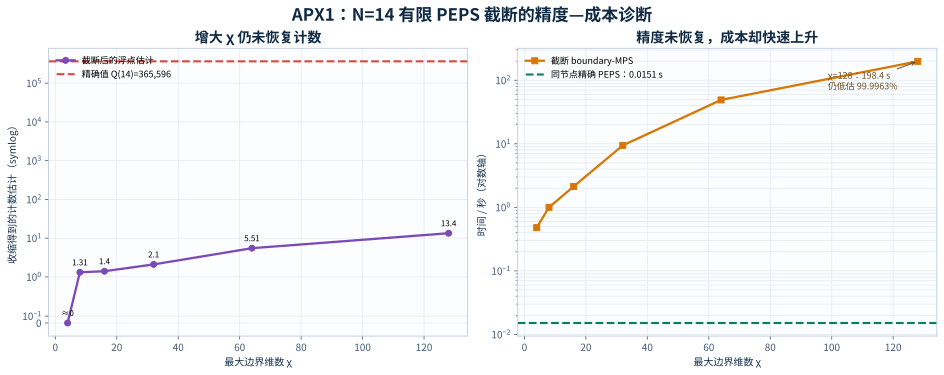
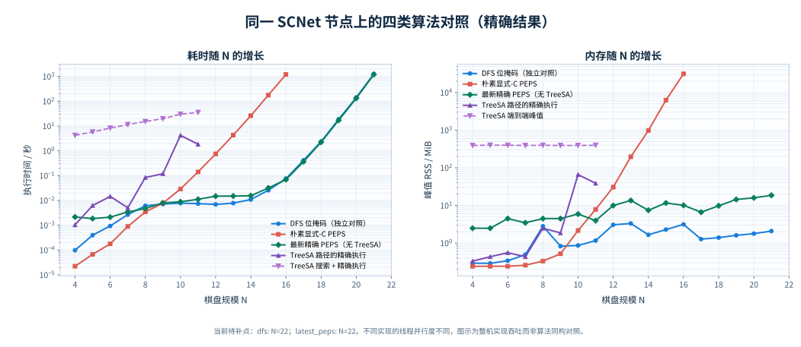
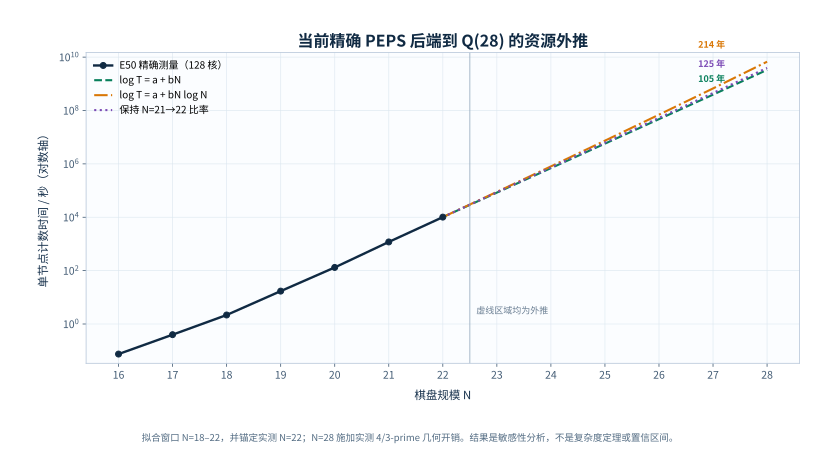

$N$ 皇后问题不仅是组合计数的经典课题，也是测试算法在“强局部约束体系”下表现的标准基准。其求解的传统最优方案通常依赖基于位运算的深度优先搜索（Bitboard DFS）。从统计力学的视角，该问题可通过投影纠缠对态（PEPS）严格表述（参考 Liu, Liao, Wang, arXiv:2605.10326v2）。
本研究显式构造了编码排斥规则的 rank-9 局域张量 $B$：包含一个物理占据指标 $\alpha\in\{0,1\}$，以及列、行和两族对角线四个约束通道的八条虚腿（键维为 2）。$\alpha=0$ 时，四通道独立传递 0 或 1，产生 $2^4=16$ 项；$\alpha=1$ 时，产生唯一的占据项。对物理指标求和得到 rank-8 计数张量 $C=\sum_\alpha B$。将其铺设为 $N \times N$ 的网络，在施加对应的边界条件后，与直积态 $\ket{\Psi_0} = (\ket{0} + \ket{1})^{\otimes N^2}$ 求内积，即可将组合计数精准转化为张量网络的收缩：
$$ Q(N) = \langle \Psi_{\text{PEPS}} | (\ket{0} + \ket{1})^{\otimes N^2} \rangle $$
$v_0=(1,0)$ 初始化每条约束线；行、列终点使用 $v_1=(0,1)$ 强制恰好存在一个占据；两族对角线终点使用 $v_2=(1,1)$ 允许至多一个占据。网络端点向量的确立保证了约束的闭环。
这种“局部规则 $\to$ 稀疏张量”的模型，在物理上对应自旋冰（Spin Ice）的 Ice-rule 顶点约束，以及里德堡阵列（Rydberg Blockade）的相邻激发阻塞。其网络收缩等价于评估体系的基态简并度或受约束 Hilbert 空间的维数。
通过 60 轮严格隔离的工程消融实验，本研究揭示了一个底层的算法机制：
对于极度稀疏且带有强硬约束的 PEPS，在严格保持张量收缩等价性的前提下，经过局域张量编译（Partial Evaluation）、状态压缩以及收缩结合顺序（Reassociation）的调整，该网络在冯·诺依曼架构上的精确收缩过程，其底层机器码执行流会自然趋近于经典的位掩码深度优先搜索（DFS）。
这表明：在强约束极限下，多维张量网络收缩的计算本质与状态空间的遍历搜索具有高度的结构同源性。
在系统性的性能基准测试中，通用张量网络中常被采用的高阶优化手段，在面对此类包含大量“死胡同（Dead ends）”的稀疏结构时，并未取得预期收益，甚至引发了明显的性能回退：
基于“稠密键维”的图论路径算法无法有效评估稀疏支持度。在 $N=10$ 的测试中，TreeSA 规划的中间态峰值高达 491,832，远超朴素逐行收缩的 4,510，导致内存与规划耗时急剧上升。
尝试利用 ZDD 发现边界态的图同构来压缩网络。然而，由于强约束下状态的实际汇合率极低，维护规范节点（Canonical Node）和全局哈希查找的开销，远超状态复用带来的收益。
强行施加完整的 $D_4$ 对称群裁剪张量空间时，状态规范化过程中的内存离散访问与簿记（Bookkeeping）开销，抵消了搜索空间的剪枝收益。工程上仅保留了成本极低的首行镜像对称。
在处理大型张量网络时，通常采用边界 MPS（Boundary MPS）配合 SVD 截断来控制环境键维 $\chi$。我们评估了该传统方法在此类强约束 PEPS 中的近似表现。
在 $N=14$（真实精确解 $Q(14) = 365,596$）的浮点网络收缩中施加常规 SVD 截断：

机制反思： 常规的 SVD 截断仅依据当前的局部奇异值（Schmidt 权重）进行筛选，这在强约束状态空间中极易无差别地丢弃处于低局部纠缠、但在全局层面可延续至合法构型的物理分支。这提示研究者：在计算受挫磁体或约束晶格模型的简并度或残余熵时，若缺乏针对目标可观测量的“保约束（Constraint-preserving）”截断策略，传统截断方法可能会导致严重的系统性偏差。
尽管 N-Queens 是一个确切的组合计数问题，但本研究对张量边界和局部算子的工程剖析，为处理具有“强局部约束”的物理 iPEPS（如角转移矩阵 CTMRG 的收缩与环境重整）提供了可迁移的学术视角：
在收缩含有强约束的网络时，基于稠密复杂度的评估工具难以准确预测实际计算开销。最优收缩路径应脱离单纯的“割线拓扑连接数”，转而依托割线上实际存活的非零状态支持度（Actual Sparse Support）建立代价函数。
对于如 Toric Code 顶点等逻辑约束，不应将其视为常规稠密数组进行矩阵乘法。引入 JIT 编译将其降级为按位运算或稀疏自动机，可有效消除环境张量吸收过程中的冗余浮点周期。
利用非阿贝尔对称群进行张量分块在理论上可降低维度。但在大规模动态内存调度中，判定状态轨道与查表的非连续访存开销往往不可忽视，可能反超维度缩减带来的理论红利。
在精确收缩的高并发验证中，指针跳转（Pointer Chasing）往往构成终极瓶颈。将边界非零特征紧凑压缩（如采用 SoA 布局），依托连续内存的排序与规约（Sort-Reduce），在吞吐率上展现出压倒性优势。
边界态在有限域上具有低秩特性。但若试图通过非结构化的 PLUQ 或高斯消元提取基底，极易引发“填充效应”，破坏物理基（Physical Basis）原有的稀疏性，导致内存足迹失控。
当 CTMRG 等环境张量向内推进导致边界维度急剧膨胀时，维持完整的 BFS 前沿会引发内存溢出。此时转为 Slicing 技术，将边缘拆解为独立的 DFS 深度优先收缩流，是以时间换空间的有效范式。
在长达数十轮的消融实验中，算法性能的根本性突破发生在改变张量的收缩结合顺序上。E38 放弃了对晚层巨型中间张量的记录与排序，转为从每一个保留的前缀状态（Prefix Sector）出发，直接流式递归消费剩余的 $C$ 张量。
注：DFS 基准采用仓库内独立实现。E47 使用了终端超节点展开（Last-six supernode），而 DFS comparator 未进行同等级别的微指令展开。此对比旨在说明当前优化实现的实际吞吐能力。
| 问题规模 $N$ | DFS 基准中位耗时 (s) | 优化 PEPS (E47) 中位耗时 (s) | 相对耗时比 (PEPS/DFS) |
|---|---|---|---|
| $N = 14$ | 0.010550 | 0.008303 | 0.787× |
| $N = 15$ | 0.068454 | 0.051086 | 0.746× |
| $N = 16$ | 0.399135 | 0.314296 | 0.787× |
| $N = 17$ | 2.999933 | 2.335194 | 0.778× |
| $N = 18$ | 25.342626 | 19.027543 | 0.751× |
为消除本地机器的干扰，我们将程序固定至 SCNet 独占节点（2× AMD EPYC 7742，128 核心）进行统一基准测试。测试对象包括独立 DFS、早期的朴素 PEPS、最新 Exact PEPS（不使用 TreeSA）以及基于 TreeSA 规划的张量收缩。DFS 与 PEPS 精确收缩算法在时间复杂度和空间复杂度曲线高度相似，也印证了两种算法在本质上是共通的。

| 规模 $N$ | DFS 基准耗时 (s) | Latest PEPS 耗时 (s) | 相对耗时比 | PEPS 峰值内存 (MB) |
|---|---|---|---|---|
| 14 | 0.010902 | 0.015420 | 1.414× | 7.43 |
| 15 | 0.025699 | 0.031871 | 1.240× | 11.62 |
| 16 | 0.075594 | 0.069050 | 0.913× | 10.07 |
| 17 | 0.414400 | 0.365453 | 0.882× | 6.61 |
| 18 | 2.369722 | 2.220825 | 0.937× | 9.78 |
| 19 | 18.747813 | 17.040845 | 0.909× | 14.41 |
| 20 | 141.132524 | 131.450921 | 0.931× | 15.89 |
| 21 | 1,270.576339 | 1,188.372938 | 0.935× | 18.59 |
依托包含中国剩余定理（CRT）的纯量宽键后端，我们在 SCNet 节点上以 128 线程运行独立作业，耗时 10,112.287 秒 (2.81 小时) 完成了 $Q(22)$ 的极限验证，其峰值 RSS 仅为 57.8 MB。这证明架构优化已彻底解决了内存爆炸问题。

完成了显式 $B/C$ 张量的机械编译机制验证；部署了严格校验的 CRT 整数前端；实现了对 $Q(22)$ 的大规模并行收缩；并沉淀了涵盖 Runtime, RSS, Support 维度的一手测试数据集。
由于物理上指数状态增长的制约，本研究未能达成挑战中设定的 $Q(27)$ 与 $Q(28)$ 计算目标。研究的阶段性落脚点在于：确立“强约束 PEPS 保真编译与机制消融的最优工程实践”。
核心复现资产与原始数据：
本研究的学术落脚点并不在于创造组合计数领域的新纪录。它通过严谨的工程剖析证明：当张量网络（PEPS）理论模型遭遇冯·诺依曼架构的物理局限时，脱离实际数据特征的抽象图论与代数技巧往往收效甚微；唯有顺应底层数据流向，通过编译消除冗余、自适应切分搜索空间，方能发掘张量收缩在复杂体系中的计算潜能。这一结论不仅深化了对强约束计数算法的理解，更为后续可扩展的量子多体计算设计提供了务实的方法论参考。